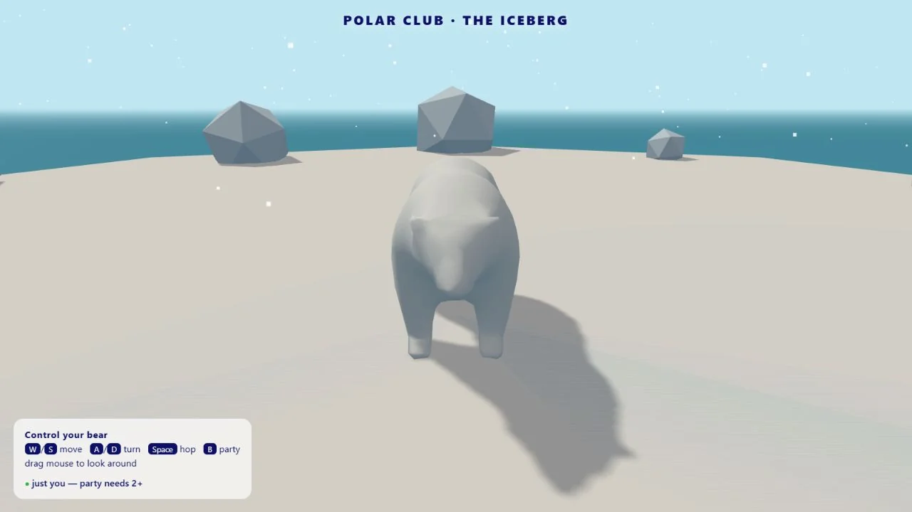

3D & Games2025
Polar Club
Come for the polar bear. Stay for the tiny shared iceberg.
Languages
- JavaScript
- HTML
- CSS
Frameworks & tools
- Three.js
- Trystero
See it in action
Project preview
A view of the working project. Open the demo to explore it.
The challenge
Give a familiar sign-in interaction a playful destination.
The idea
A friendly polar bear welcomes visitors before the interface opens into a shared 3D iceberg.
The build
HTML and CSS build the entry screens; Three.js renders the low-poly bear and arctic scene. Trystero synchronises peer-to-peer presence and movement in a shared room.
What came out of it
An interactive prototype with controllable bears and a shared party mode. Sign-in is a demo flow that opens the scene, not a real authentication system.
More technical detail in the project repository. Implementation notes ↗